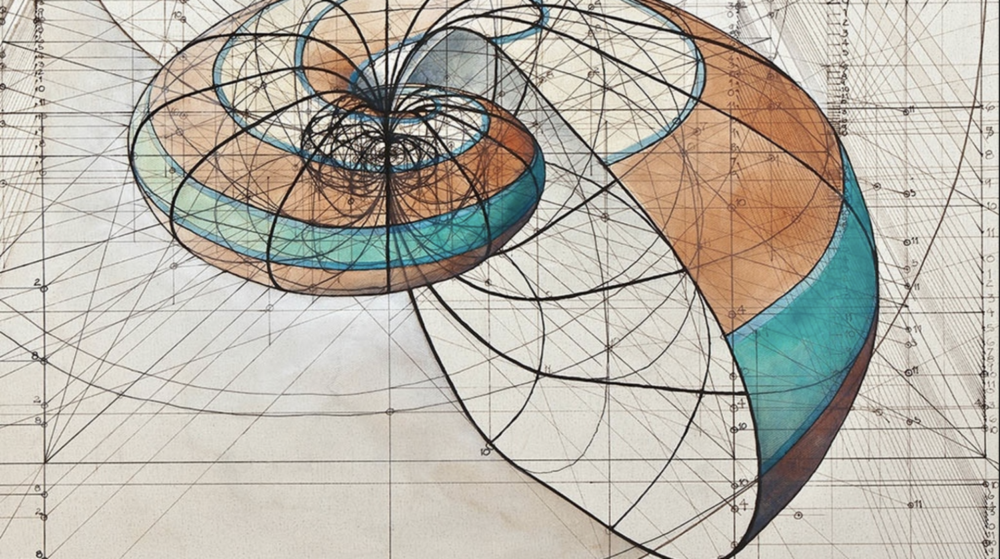

The golden ratio was called the extreme and mean ratio by Euclid,and the divine proportion by Luca Pacioli,and also goes by several other names.
Mathematicians have studied the golden ratio's properties since antiquity. It is the ratio of a regular pentagon's diagonal to its side and thus appears in the construction of the dodecahedron and icosahedron.
A golden rectangle—that is, a rectangle with an aspect ratio of φ -may be cut into a square and a smaller rectangle with the same aspect ratio.
The golden ratio has been used to analyze the proportions of natural objects and artificial systems such as financial markets, in some cases based on dubious fits to data.
The golden ratio appears in some patterns in nature, including the spiral arrangement of leaves and other parts of vegetation.

The golden ratio has been used to analyze the proportions of natural objects and artificial systems such as financial markets, in some cases based on dubious fits to data.
The golden ratio appears in some patterns in nature, including the spiral arrangement of leaves and other parts of vegetation.